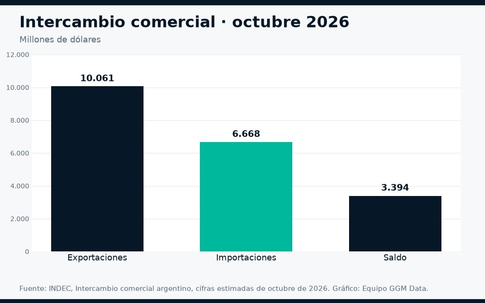

Comercio exterior
El superávit comercial de octubre trepó a USD 3.394 millones, con exportaciones por encima de los USD 10.000 millones
El Instituto Nacional de Estadística y Censos (INDEC) informó que las ventas al exterior crecieron 26,4% interanual y las compras cayeron 6,7%. En los primeros diez meses de 2026, el saldo positivo acumuló USD 24.568 millones.

El intercambio comercial argentino de bienes volvió a mostrar en octubre un saldo ampliamente superavitario. Según el informe técnico publicado el 19 de noviembre por el Instituto Nacional de Estadística y Censos (INDEC), las exportaciones alcanzaron USD 10.061 millones, con un aumento interanual de 26,4%, y las importaciones se ubicaron en USD 6.668 millones, 6,7% por debajo del mismo mes de 2025. El resultado fue un superávit de USD 3.394 millones, el segundo más elevado de 2026, solo por detrás de los USD 3.450 millones de mayo.
El comercio total de bienes —exportaciones más importaciones— sumó USD 16.729 millones y creció 10,7% interanual. Las cifras son estimaciones preliminares. El valor exportado de octubre fue el más alto de la serie mensual divulgada por el organismo para 2025 y lo que va de 2026, levemente por encima de los USD 10.036 millones de septiembre. En la medición desestacionalizada, las ventas al exterior aumentaron 2,7% respecto del mes anterior y la tendencia-ciclo creció 1,1%.
Las exportaciones crecieron en los cuatro grandes rubros
El incremento de las ventas fue generalizado. El de mayor valor correspondió a las manufacturas de origen agropecuario (MOA), con USD 3.314 millones y un alza de 18,8%. Les siguieron las manufacturas de origen industrial (MOI), con USD 2.685 millones (13,1%), y los productos primarios, con USD 2.328 millones (22,3%).
El salto más pronunciado se observó en combustibles y energía, que alcanzaron USD 1.734 millones y se expandieron 93,9% interanual, por una suba de 56,2% en los precios y de 24,8% en las cantidades, de acuerdo con los índices del INDEC.
Los principales productos exportados fueron los aceites crudos de petróleo, con USD 1.169 millones (121,7%); la harina y los pellets de soja, con USD 910 millones (29,7%); y el maíz en grano, con USD 887 millones (139,3%). Les siguieron los porotos de soja, con USD 577 millones —en este caso con una caída de 14,0%— y el aceite de soja en bruto, con USD 558 millones (1,7%). Esos cinco productos concentraron el 40,8% de las exportaciones del mes.
Las importaciones bajaron por una contracción de las cantidades
La caída de 6,7% interanual de las compras se explicó por un descenso de 17,3% en las cantidades, que más que compensó una suba de 12,8% en los precios. No todos los usos económicos se movieron en la misma dirección: crecieron los bienes intermedios, con USD 2.416 millones (1,9%), y los bienes de capital, con USD 1.378 millones (2,9%).
En cambio, retrocedieron las piezas y accesorios para bienes de capital, con USD 1.158 millones (−17,3%); los bienes de consumo, con USD 1.059 millones (−11,3%); los vehículos automotores de pasajeros, con USD 413 millones (−24,2%); y los combustibles y lubricantes, con USD 134 millones (−33,2%). Las cantidades cayeron en todos los usos; los descensos más marcados se ubicaron en combustibles y lubricantes (−34,0%) y en piezas y accesorios (−27,7%).
Las principales partidas importadas fueron los vehículos automóviles para transporte de personas (USD 413 millones, −24,2%) y las partes y accesorios de vehículos (USD 310 millones, −19,8%). En términos desestacionalizados, no obstante, las importaciones subieron 1,5% frente a septiembre.
Los términos del intercambio mejoraron 6,1%
El aumento de las exportaciones no se debió solo a un mayor volumen. El INDEC indicó que, en octubre, los precios de exportación subieron 19,7% interanual y las cantidades, 5,6%. Los términos del intercambio —el cociente entre los precios de las exportaciones y los de las importaciones— mejoraron 6,1% interanual.
El organismo estimó que, si en octubre hubieran prevalecido los precios de igual mes de 2025, el superávit comercial habría sido de USD 2.495 millones. La diferencia respecto del saldo efectivamente registrado implica una ganancia por términos del intercambio de USD 514 millones. En el acumulado de enero a octubre, los términos del intercambio aumentaron 3,3% y la ganancia asociada fue de USD 2.603 millones.
Superávit con Chile y la Unión Europea, y déficit con China y Brasil
China fue el principal destino de las exportaciones en octubre, con ventas por USD 1.326 millones (12,3%). El intercambio bilateral, sin embargo, arrojó un déficit de USD 400 millones, a partir de importaciones por USD 1.726 millones (−7,3%). Entre las principales zonas económicas del informe, China fue la única con saldo negativo.
Brasil se ubicó segundo como destino, con exportaciones por USD 1.269 millones (−2,7%) e importaciones por USD 1.425 millones (−10,9%), lo que dejó un déficit de USD 156 millones. Con la Unión Europea el saldo fue superavitario en USD 277 millones (exportaciones por USD 1.142 millones, 23,2%). Con Estados Unidos el resultado también fue positivo, en USD 250 millones, y con Chile el superávit trepó a USD 534 millones, con ventas por USD 626 millones (41,6%).
El Mercosur concentró el mayor intercambio del mes, con USD 3.577 millones y un superávit de USD 39 millones. La ASEAN registró un saldo positivo de USD 817 millones, el más holgado entre las zonas relevadas en octubre. En el acumulado de los diez meses, el mayor déficit bilateral correspondió a China, con USD 6.292 millones, y el de Mercosur fue de USD 2.616 millones. El mayor superávit por zona se observó en el Resto de ALADI, con USD 8.949 millones, de los cuales USD 4.866 millones correspondieron al intercambio con Chile.
El saldo de diez meses más que duplicó el de todo 2025
Entre enero y octubre de 2026, las exportaciones sumaron USD 87.328 millones, 22,1% más que en igual período del año anterior, con alzas de 12,2% en los precios y de 8,9% en las cantidades. Las importaciones alcanzaron USD 62.760 millones y cayeron 2,9%, porque la baja de 10,6% en las cantidades superó el incremento de 8,6% en los precios. El intercambio comercial acumulado llegó a USD 150.088 millones (10,3%) y el superávit se ubicó en USD 24.568 millones.
Ese resultado ya más que duplica el superávit de todo 2025, que el mismo informe del INDEC ubicó en USD 11.320 millones. Octubre fue, además, el segundo mes consecutivo con exportaciones por encima de los USD 10.000 millones.
Fuente
Instituto Nacional de Estadística y Censos (INDEC). Informe técnico “Intercambio comercial argentino (ICA). Bienes. Cifras de octubre de 2026”, publicado el 19 de noviembre de 2026. Dirección Nacional de Estadísticas del Sector Externo y Cuentas Internacionales. Datos preliminares.